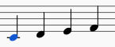
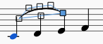
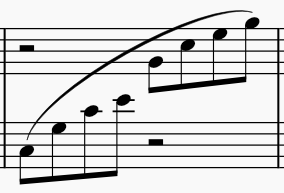
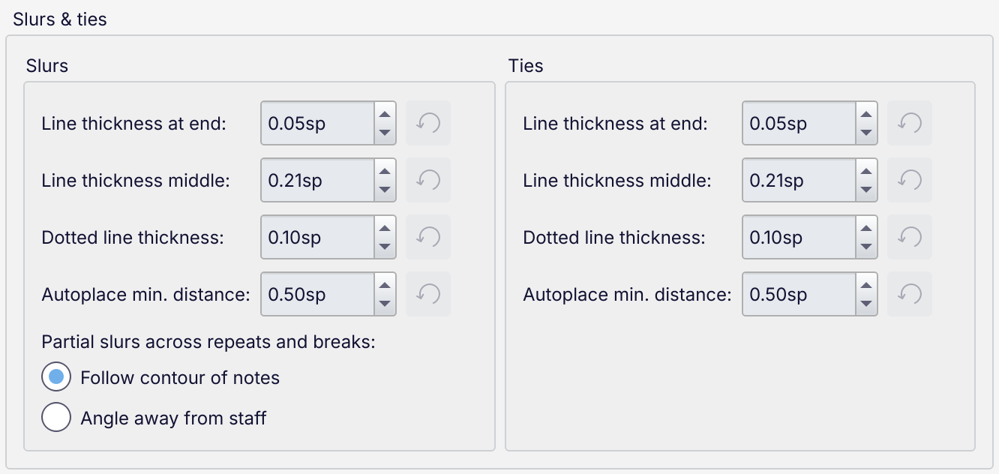
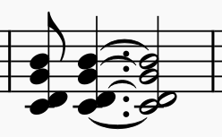
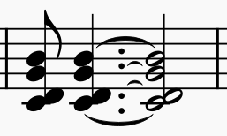

连音线与延音线
连音线（slur）是一条跨越任意数量不同音高音符的曲线，表示连奏（legato）演奏，不过具体诠释取决于乐器。
尽管看起来非常相似，连音线不应与延音线（tie）混淆。延音线连接相同音高的音符，并将第一个音符的时值延长以涵盖下一个音符。
有关如何在音符输入模式下输入延音线的信息，参见输入延音线。
有关如何在普通模式下输入延音线的信息，参见在普通模式下添加延音线。
添加连音线
选中一个音符后，可以使用以下任一方式创建连音线：
- 键盘快捷键 S。此选项既方便又快捷。
- 菜单选项 添加 -> 线条 -> 连音线
- 从 Lines 面板中选择一条连音线。
确切的应用方法取决于您是处于音符输入还是普通操作模式。下面将以键盘快捷键方法为例。
在普通模式下添加连音线
方法 1
- 选中您希望连音线开始的音符：

- 按 S 添加一条延伸到下一个音符的连音线：

- 要将连音线延伸到下一个音符，按住 Shift 并按 Right，根据需要重复：

- 当您延伸连音线以覆盖更多音符时，它可能会翻转方向。要手动翻转方向，按 X：

- 按 Esc 退出编辑模式：

方法 2
- 选中您希望连音线开始的音符；
- 选择以下选项之一： * 添加单条连音线：按住 Ctrl（Mac：Cmd）并选中您希望连音线覆盖的最后一个音符。 * 为所有声部添加连音线：按住 Shift 并选中您希望连音线覆盖的最后一个音符。
- 按 S。
在音符输入模式下添加连音线
- 输入连奏段落的第一个音符
- 按 S 创建一条从刚输入音符开始的连音线
- 键入连奏段落中的其余音符
- 再次按 S 在最后输入的音符上结束连奏段落。
多声部和跨谱表连音线
使用方法 2（上文），您可以在相同或不同声部的音符之间创建连音线。跨谱表连音线可以完全相同的方式创建。例如：

您还可以调整现有连音线的起点/终点手柄，将起点或终点移动到不同声部的音符：
- 单击连音线的起点或终点手柄。；
- 按 Shift+Up/Down，在声部之间以及从一条谱表到另一条谱表移动起点或终点。
更改连音线和延音线的外观
要调整连音线或延音线的形状，或连音线的范围，参见直接调整元素。
连音线和延音线属性
连音线和延音线的某些属性可在属性面板中调整：
- 样式：实线、宽虚线、窄虚线或点线
- 位置：位于音符上方或下方
延音线还有一个设置：
- 延音线放置：将端点定位在符头的内侧或外侧
连音线和延音线样式
乐谱中所有连音线和延音线的默认属性可在 格式 -> 样式 下的连音线与延音线中调整。

这些选项指定连音线和延音线的绘制方式。它们通常对连音线和延音线相同，但可以分别设置不同的样式。
- 端点线粗细和中点线粗细：连音线和延音线通常绘制为两端细、向中间逐渐加粗的弧线。这些设置决定最小和最大粗细。请注意，并非每条延音线都会达到此最大粗细，因为某些非常短的延音线出于排版原因需要做得更细。此外，如果勾选了样式 -> 根据字体自动加载样式设置（默认勾选），这些选项属于在更改乐谱音乐字体时可能自动更改的选项之一。
- 点线粗细：点线连音线和延音线的粗细，通常绘制得更细
- 自动放置最小距离：连音线与其外部另一项目之间的最小距离
跨越反复和分隔的部分连音线控制部分连音线（跨越系统分隔、反复或跳转）的倾斜，有两个选项：
- 跟随音符轮廓：连音线各部分的倾斜由其跨越的音符决定
- 偏离谱表方向：连音线的“悬垂”端将始终偏离谱表方向，而不管音符的轮廓如何。

这些选项仅适用于延音线。
- 最小延音线长度：强制延音线的最小长度，对于短时值之间以及和弦之间的延音线很有用
- 最小悬垂延音线长度：悬垂或部分延音线的最小长度，例如跨越系统分隔的延音线的两个分段，或反复或跳转处的部分延音线
- 单音符上的放置和和弦上的放置：延音线端点相对于其所连接符头的默认定位，如两个图标所示：
- “内侧”：延音线从第一个符头正右方开始，到第二个符头正右方结束，在垂直方向上略高于或低于其中心（根据其方向）
- “外侧”：延音线从符头的正上方或正下方开始（根据其方向），在水平方向上位于第一个符头中心正右方、第二个符头中心正左方
- 带附点的内侧延音线放置：指定当音符有附点时，内侧延音线左端点的位置（“内侧延音线”指使用“内侧”放置时的所有延音线，或使用“外侧”放置时到和弦内部音符的延音线）：
- 自动：如果有空间，在附点之前开始延音线；在和弦中，这可能意味着各延音线的起点不会对齐，因为每条延音线的排版是分别考虑的
- 始终在附点之前：在附点之前开始所有延音线；这可能会导致与附点碰撞，应通过手动调整来避免
- 始终在附点之后：在附点之后对齐地开始所有延音线。
以下示例使用“外侧”放置：

自动

始终在附点之前

始终在附点之后